Bildschirmfotos
Zum Verständnis dieses Artikels sind folgende Seiten hilfreich:
Zuerst sollte man sich Gedanken dazu machen, was man eigentlich mit einem Bildschirmfoto zeigen möchte. Je nach Verwendungszweck sollte bei der Bildauswahl überlegt werden, ob ein Foto im Vollbild- bzw. Fenstermodus sinnvoll ist oder ob ein Ausschnitt ausreicht.
Beispiele¶
| 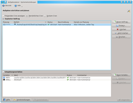 |
| Fenster enthält zu viel Leerraum |
| 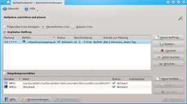 |
| Fenster verkleinert |
| 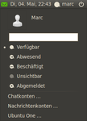 |
| Ausschnitt |
| 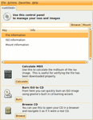 |
| Falsche Fensterdekoration |
Programme¶
Hier reicht es, wenn das Hauptfenster im Fenstermodus fotografiert wird. Dabei sollte man beachten, das Fenster so zu verkleinern, dass möglichst wenig "unbenutzte" Fläche zu sehen ist. Der Rahmen sollte grundsätzlich mit der Standardfensterdekoration von K|X|L|Ubuntu aufgenommen werden, um eine einheitliches Erscheinungsbild zu gewährleisten. Außerdem soll der Mauszeiger nicht mit aufgenommen werden. Für einige Passagen ist es sinnvoll, weitere Programmfenster, z.B. Optionen, aufzunehmen. Aufnahmen eines Ausschnitts bieten sich u.a. bei Symbolleisten an.
Spiele¶
Bei Spielen wird oft ein Foto des ganzen Bildschirms (Vollbild) benötigt. Dies sollte mit einer Auflösung von ca. 800x600 Pixel aufgenommen werden, um einen ersten Eindruck vom Spiel vermitteln zu können. Es sollte eine Auswahl von 2 - 3 interessanten Screenshots im jpg-Format angefertigt werden. Bei den meisten Spielen gibt es eine Tastenkombination, um einen Screenshot zu erstellen. Hinweise dazu findet man in der Spieledokumentation. Im Fenstermodus sollten Bildschirmfotos ohne Rahmen aufgenommen werden.
Bearbeitung¶
Persönliche Daten¶
Hinweis:
Bei der Bearbeitung von Bildschirmfotos diese bitte auf persönliche Informationen (Namen, Daten, Kontaktinformationen et cetera) überprüfen und Teilbereiche mit der geeigneten Software unkenntlich machen. Als Methoden kommen beispielsweise schwarze Balken oder "verpixeln" in Frage.
Wichtige Anforderungen¶
Um sowohl Speicherplatz als auch Datenaufkommen zu sparen, ist es notwendig, erzeugte Bildschirmfotos zu optimieren. Folgende Grenzwerte sollten dabei nicht überschritten werden:
| Zusammenfassung | ||
| Format | jpg | png |
| Dateigröße | max. 500 kB | max. 500 kB |
| Bildgröße | max. 800x600 | max. 800x600 |
| Qualitätsstufe | 75 | 9 |
Generell gilt: je kleiner die Werte, desto kleiner die Datei. Die Optimierung sollte allerdings immer mit Augenmerk auf die Qualität der Abbildung vorgenommen werden. Nach der Optimierung sollten abgebildete Texte noch lesbar und das Bild noch erkennbar sein. Da dies teilweise schwer objektiv fest zu legen ist, folgen nun ein paar Beispiele für die einzelnen Eigenschaften.
Bildgröße¶
Wird die Bildgröße zu klein gewählt, werden Texte unleserlich und das Bild wird "pixelig". Um dies zu vermeiden, sollte die Bildgröße angemessen (so klein wie möglich, so groß wie nötig) gewählt werden. Das Beispiel verdeutlicht das Problem (bitte die Bilder durch  vergrößern):
vergrößern):
| Bildgröße | |
| angemessen | verpixelt |
| 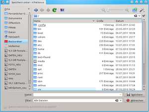 | 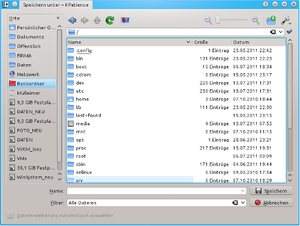 |
| richtig | falsch |
Transparenz¶
In manchen Fällen sind die im Bildschirmfoto abgebildeten Objekte nicht rechteckig. Hier ist es sinnvoll, mit einem Bildbearbeitungsprogramm vorhandene Bereiche transparent zu machen, wenn nicht bereits bei der Erstellung des Bildschirmfotos darauf geachtet wurde ("Das aktuelle Fenster aufnehmen").
| Transparenz | |
| OK | farbige Ecken |
| 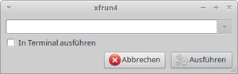 | 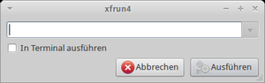 |
| richtig | falsch |
Qualität¶
Die Einstellung der Qualität bei JPEG-Dateien ist eine weitere Stellschraube, mit der die Dateigröße verringert werden kann.
Die Qualität wird in der Regel mit einem Schieberegler eingestellt:
Je kleiner der Wert, desto kleiner die Datei -> hohe Kompression
Je gößer der Wert, desto größer die Datei -> niedrige Kompression
Das JPEG-Format (.jpg) setzt auf verlustbehaftete Kompression und sollte insbesondere für Bildschirmfotos vom ganzen Bildschirm oder Spielen verwendet werden, da die Kompression bei vielen Farben und kleinen Farbflächen die besten Ergebnisse erzielt. Bei Bildern im JPEG-Format sollte die Einstellung für die Qualität nicht zu niedrig gewählt werden, da sonst deutliche Artefakte auftreten können.
| jpg-Qualität | ||
| Original-Bild | Qualität 75 | Qualität 15 |
| 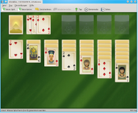 | 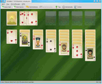 | |
| richtig | falsch | |
| Größe: 348,5 kB | Größe: 65,2 kB | Größe: 22,9 kB |
Das PNG-Format (.png) setzt anders als JPEG auf eine verlustfreie Kompression. Diese ist besonders gut geeignet für Bilder mit weniger Farben und großen einheitlichen Farbflächen. Dies entspräche in unserem Anwendungsfall Bildern von Programmen, Dialogen und Menüs. Hier kann der Kompressionsgrad durchaus höher gewählt werden, ohne dass Artefakte auftreten.
Weitere Informationen zum Thema finden sich unter anderem im Artikel Bildkompression der deutschen Wikipedia.
Software¶
| 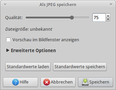 | 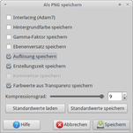 |
| Qualitätsgrad | Speichern |
GIMP¶
Transparenz einstellen¶
Mit dem Zauberstab den Bereich im Bildschirmfoto wählen, der später nicht transparent erscheinen soll. Über "Farbe -> Farbe zu Transparenz... -> OK" die Fehlfarben entfernen. Weitere Bereiche mit dem Zauberstab anwählen und mit Entf löschen. Abschließend das Bild speichern.
Qualität festlegen¶
Beim Speichern von jpg über "Datei -> Speichern unter..." bzw. ⇧ + Strg + S gelangt man in ein neues Menü. Hier die Qualitätsstufe "75" auswählen.
Shutter¶
Bei der Verwendung von Shutter unter "Bearbeiten -> Einstellungen" ( Strg + P ) die Qualität und den Dateityp im Reiter "Allgemein" nach den Vorgaben einstellen. Mit dem eingebetteten Editor können die Aufnahmen weiterverarbeitet werden.
Terminal¶
pngquant¶
Eine weitere Alternative für PNG-Bilder ist das Kommandozeilenwerkzeug pngquant  . Leider ist die Version in den offiziellen Paketquellen (pngquant) etwas älter (1096604). Über die Homepage ist bei Bedarf ein aktuelles Fremdpaket verfügbar. Unnötige Metadaten werden bei der Konvertierung entfernt.
. Leider ist die Version in den offiziellen Paketquellen (pngquant) etwas älter (1096604). Über die Homepage ist bei Bedarf ein aktuelles Fremdpaket verfügbar. Unnötige Metadaten werden bei der Konvertierung entfernt.
Online-Dienste¶
Wer den Umgang mit der Kommandozeile scheut, kann auch den kostenlosen Online-Service TinyPNG verwenden. Wie bei jedem Online-Angebot sollte man sich aber vorher mit den Terms of use beschäftigen.
 - Blogbeitrag 04/2013
- Blogbeitrag 04/2013- Erstellt mit Inyoka
-
 2004 – 2017 ubuntuusers.de • Einige Rechte vorbehalten
2004 – 2017 ubuntuusers.de • Einige Rechte vorbehalten
Lizenz • Kontakt • Datenschutz • Impressum • Serverstatus -
Serverhousing gespendet von